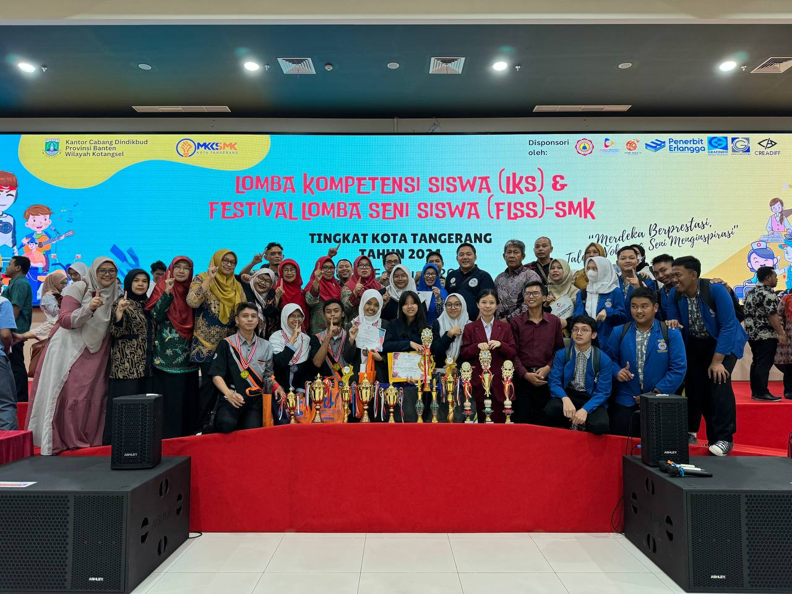

|
Website RapaTake it easy, don't make yourself tired
|
|
| Beranda | Tentang Saya | Sekolahku | Syair Lagu | |
LKS & FLSS 2024 Tingkat Kota TangerangJumat, 4 September 2026  SMKN 1 Tangerang sekali lagi menorehkan prestasi gemilang dalam dunia kompetisi pendidikan di tingkat kota. Dalam ajang Lomba Kompetensi Siswa (LKS) dan Festival Lomba Seni Siswa (FLSS) tahun ini, sekolah ini berhasil mengukir sejarah dengan meraih gelar Juara Umum. Kemenangan ini tidak terlepas dari dedikasi, kerja keras, dan bakat yang dimiliki oleh siswa-siswi SMKN 1 Tangerang. Dalam serangkaian kompetisi yang diikuti, SMKN 1 Tangerang menunjukkan dominasinya dalam beragam mata lomba yang diikutin oleh seluruh jurusan yang ada mulai dari AKL, OTKP, PM, TKJ, DKV dan TITL. dengan mata lomba mulai dari Web Technology, ITNSA, Graphic Design, Electrical, OTKP,AKL, Solo Gitar, Solo Vokal, hingga Marketing Online, sekolah ini membuktikan eksistensinya sebagai pusat pendidikan yang mampu menghasilkan prestasi gemilang di berbagai bidang. Salah satu pencapaian luar biasa yang patut dicatat adalah dominasi dalam bidang Web Technology. Kompetisi ini menuntut pemahaman mendalam tentang teknologi web, desain, dan pengembangan aplikasi. Dengan pemahaman yang kuat dan keterampilan yang terlatih, siswa-siswi SMKN 1 Tangerang mampu mengungguli pesaing-pesaingnya dengan prestasi gemilang. Tak kalah pentingnya adalah keunggulan dalam bidang ITNSA (Information Technology Network Systems Administration). Di era digital ini, keahlian dalam administrasi sistem jaringan menjadi sangat penting. SMKN 1 Tangerang menunjukkan bahwa siswa-siswinya tidak hanya menguasai teori, tetapi juga memiliki keterampilan praktis yang diperlukan untuk mengelola sistem jaringan secara efektif dan efisien. Bidang-bidang lainnya seperti OTKP (Office Administration and Communication), AKL (Accounting), Solo Gitar, Solo Vokal, Electrical, Graphic Design, dan Marketing Online juga berhasil dikuasai dengan baik oleh siswa-siswa SMKN 1 Tangerang. Dengan prestasi yang gemilang di setiap bidang ini, SMKN 1 TANGERANG berhasil menunjukkan keunggulannya untuk melahirkan generasi muda yang kompeten dan berbakat. Kemenangan sebagai Juara Umum dalam LKS & FLSS Tingkat Kota Tangerang bukanlah hanya sebuah prestasi bagi SMKN 1 Tangerang, tetapi juga merupakan bukti nyata akan dedikasi dan komitmen dari seluruh komponen sekolah, mulai dari siswa, guru, hingga orang tua murid. Kemenangan ini juga menjadi motivasi besar bagi seluruh warga sekolah untuk terus berprestasi dan mengharumkan nama baik sekolah di tingkat yang lebih tinggi lagi. Dengan demikian, SMKN 1 Tangerang tidak hanya menjadi sekadar lembaga pendidikan, tetapi juga menjadi wadah bagi pengembangan potensi dan bakat siswa dalam berbagai bidang. Prestasi gemilang ini semakin meneguhkan posisi SMKN 1 Tangerang sebagai lembaga pendidikan yang menjadi kebanggaan masyarakat Tangerang, serta membuktikan bahwa pendidikan yang berkualitas dan berorientasi pada prestasi adalah kunci menuju masa depan yang cerah. |
Tautan eksternal |
| © Copyright Rafa M Irawan, 2026. | |